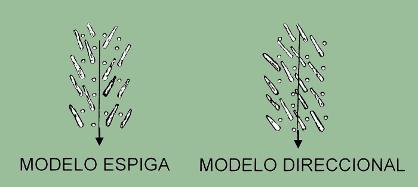
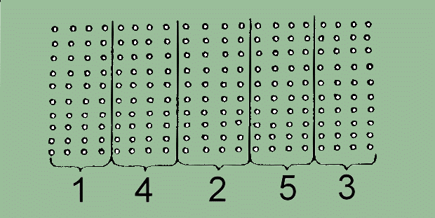

|
INFORME TÉCNICO TECFOR Nº 06 |
|
Engavillado con Trineumático TECFOR: 1ª parte
El trineumático
TECFOR
puede ser utilizado exitosamente para engavillado, tanto en raleo como en tala rasa de árboles de tamaño
bajo 0,5 m³. Aún cuando el presente informe se concentra en raleos, en tala rasa se aplican los mismos
principios y debido al aumento del volumen por hectárea y a la ausencia de árboles residuales, la
productividad es mayor que en los raleo de árboles de tamaño similar.
La principal limitación cuando se utiliza el trineumático TECFOR para engavillado, es la pendiente del terreno. En general, este está
limitado a pendientes menores de 25%, pero ello variará con los tipos de suelos y las condiciones del terreno,
La máquina se adapta mejor a terreno plano, reduciendo su productividad una vez que la pendiente excede
el 15%.
Como en la mayoría de las operaciones de producción, cada fase de cosecha (tala, engavillado y madereo)
deberá ayudar a la fase siguiente en la operación. Se deberá minimizar la interferencia entre
los taladores, el engavillador, el TECFOR y el skidder. La operación, por tanto, se optimiza si está
ligeramente desfasada. De este modo los suministros de madera se mantienen lo suficientemente altos en cada etapa
del proceso para continuar trabajando, cuando la fase anterior tiene una interrupción o una merma.
El sistema que se presenta a continuación es una operación de raleo, donde intervienen: tala y desrame
con motosierra, engavillado con la ayuda de un trineumático TECFOR y la extracción con skidder. Cada operación se discute individualmente
con sus respectivos planes de acción.
1.- Tala:
El mejor sistema para talar, corresponde a un sistema de fajas. Los volteadores deberán trabajar con una
faja que incluya 2 ó 3 hileras de árboles de los que están siendo raleados. La experiencia
ha demostrado que el trineumático TECFOR trabaja mejor en fajas largas y angostas que en otras anchas y cortas (tanto
en función de la productividad, como también en el daño a los árboles que permanecen
de pié). Empezando en la parte posterior del tramo, los árboles deberán ser talados lejos
de la cancha para sacar los trozos. De ésta manera, los volteadores estarán talando en un área
abierta la mayor parte del tiempo. Idealmente deberá usarse una tala "modelo espiga" a cualquier
lado del sendero o corredor de engavillado. Si embargo, si la inclinación del árbol impide esto,
la tala de todos los árboles en una misma dirección, es aceptable y a menido más fácil
para los taladores . Si uno que otro árbol cae en la dirección equivocada, el TECFOR podrá girarlos.

Los tocones deberán cortarse lo más abajo posible. Los tocones altos restringen el movimiento, tanto
del skidder como del TECFOR.
Se puede usar más de un volteador en una faja, escalonándolos a lo largo de una distancia de trabajo
segura. Los volteadores deberán evitar enterrar las bases o las copas con barro y donde sea necesario, deberán
limpiar físicamente las bases para un acceso más fácil. Una vez que se ha completado una faja,
se puede comenzar con la otra. Se deberá saltar la faja adyacente y continuar con la siguiente. Una vez
que el TECFOR
ha engavillado y el skidder ha extraído una faja, se puede talar la faja adyacente. La siguiente figura
ilustra el orden en el que se recomienda talar las fajas. El plan de fajas ayuda al trineumático a definir
un corredor de trozas para engavillado y reduce la probabilidad de perder trozas. Las fajas largas permiten desarrollar
un modelo de trabajo y reducir el tiempo de viaje del TECFOR entre fajas.

2.- Engavillado:
El TECFOR
sigue detrás de los cortadores trabajando cada vez en una faja es completamente talada. El engavilldado
requiere un alto nivel de pericia y concentración. El operador necesita pensar constantemente donde están
las trozas siguientes y donde las colocará.
Ubicación de la gavilla: El primer paso es para que el operador decida donde coloca la gavilla. El deberá
considerar los siguientes puntos.
a) ¿Dónde están los árboles que
quedan, en función del sendero de extracción del skidder y del movimiento del TECFOR durante el engavillado? El TECFOR estará viajando hacia atrás y luego volviendo y girando para
depositar las trozas en el sitio de engavillado. El lugar de engavillado deberá tener una zona despejada
a un lado para permitir que la sección posterior del TECFOR se mueva a través de ésta, sin dañar los árboles.
b) ¿Qué sendero de extracción tomará
el skidder? Se deberá colocar la gavilla de modo
de facilitar la extracción el skidder, es decir, que este pueda winchear y comenzar la marcha en forma recta
y con la menor cantidad de obstáculos posibles.
c) ¿Dónde está el suministro de trozas? La gavilla deberá colocarse en un área que minimice la distancia
de viaje durante el engavillado.
Plataforma de gavilla:
Una vez que se ha determinado la ubicación de la gavilla, el operador necesita preparar un banco o plataforma
de soporte para las trozas. El propósito del banco es sostener los troncos sobre el suelo para estrobarlos
fácilmente.
Las trozas necesitan sobresalir hacia delante aproximadamente 1 metro y la zona debajo de los extremos de la troza,
deberá estar libre de barro. Dependiendo de las condiciones del rodal, se dispone de varias opciones para
la plataforma que se enumeran a continuación:
a) Barro y copas:
El operador puede apilar varias copas y barro para construir una plataforma. El operador deberá recordar
que el barro se compactará a medida que se apilen las trozas, para lo cual se necesita construir el banco
suficientemente alto para permitir la compactación.
b) Trozas:
Una excelente plataforma se construye con trozas de desecho de una explotación anterior o de árboles
de desecho de un raleo, la que además se hace muy fácilmente. Esta alternativa es usar un trozo pulpable.
c) Una zanja o fosa:
Usando la garra, el operador puede cavar una fosa lo suficientemente profunda para permitir que pueda pasar el
estrobo. Las trozas se engavillan entonces sobre la fosa.
d) Terreno natural:
Donde lo permita el terreno, cimas de los montes, afloramiento rocosos, se puede armar la gavilla sobre el suelo,
con las puntas de las trozas sobresaliendo, sin construir una plataforma.
CONTINUA…
Y RECUERDE… TECFOR ES TECNOLOGIA FORESTAL